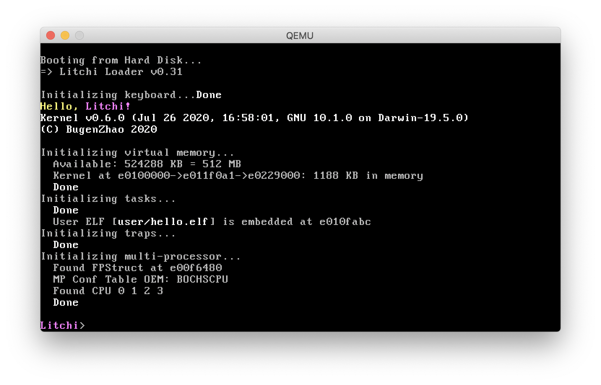

Bugen's toy kernel for x86 systems implemented in modern C++.

Get Started
Install Toolchains
Litchi is compiled to i386-elf target, which may require a cross-compiler. For macOS user, some Homebrew formulae and bottles are provided (see BugenZhao/homebrew-litchi).
Make sure you have Homebrew installed, then simply run:
$ brew tap bugenzhao/litchi
$ brew install i386-litchi-elf-binutils \
i386-litchi-elf-gcc \
i386-litchi-elf-gdb \
litchi-qemu
Build & Run
Litchi is built by CMake, which is fairly easy to build and run:
$ git clone https://github.com/BugenZhao/Litchi.git && cd Litchi
$ mkdir build && cd build && cmake .. && make qemu
Progress
- [x] Adopt bootloader from JOS / xv6
- [ ] Bootloader support for floppy drive
- [x] Port old Litchi codes
- [x] CMake build support
- [x] Kernel level standard output
- [x] Color output in console
- [x] Serial port color output
- [ ] Serial port input
- [x] Kernel panic and warning
- [x] Programmed keyboard input support
- [x] Kernel level standard input
- [ ] Input with format
- [x]
stringToLong
- [ ]
scanFmt
- [x] Basic debugging information
- [ ] Basic kernel commands
- [x]
help
- [x]
echo
- [x]
vm-*
- [ ]
...
- [x] Physical memory detection
- [x] Physical memory management
- [x] Virtual memory
- [x] Kernel address space
- [ ] Kernel heap management
- [x] User level task
- [x] Interrupt / Rrap
- [x] System call
- [ ] Test for standard library
- [ ] Interrupt based keyboard input
- [ ] Shell
- [ ] Multitasking
- [ ] Multi-core support
- [ ] Port to x86-64
- [ ] ...
Reference
- JOS / xv6
- Stack Overflow
- Hurlex
- Orange'S: 一个操作系统的实现
- OSDev.org